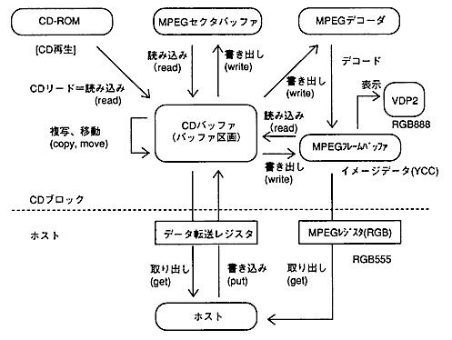
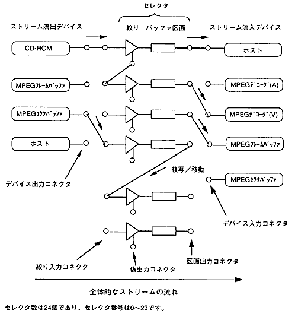
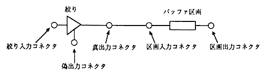
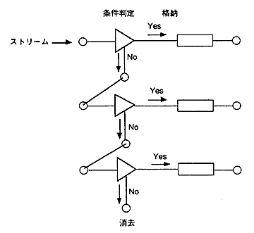
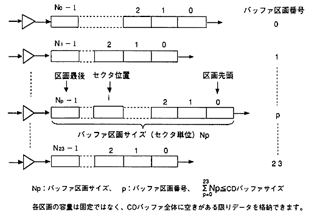
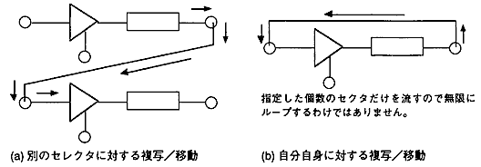
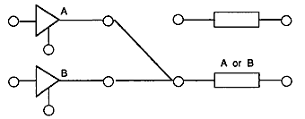
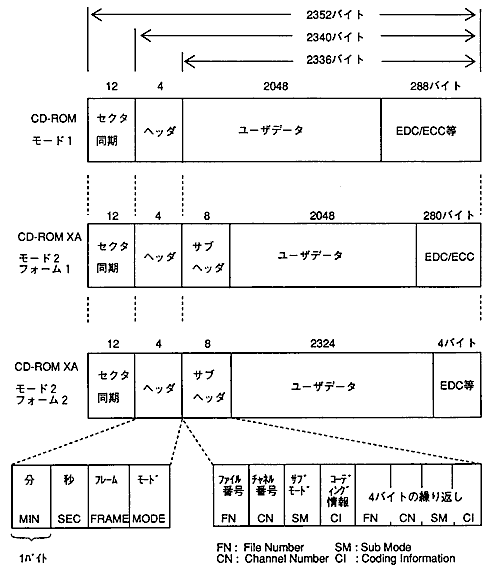

★PROGRAMMER'S GUIDE
★CD通信I/F(CDパート)
★PROGRAMMER'S GUIDE
★CD通信I/F(CDパート)
図5.1 CDブロック全体のデータフロー

図5.2 CDブロックの全体構成図

図5.3 セレクタの構造(初期状態)

図5.4 ストリーム選択処理の模式図

図5.5 バッファ区画の構造

図5.6 セクタデータの複写／移動

図5.7 OR条件によるセレクタの接続

入力 | 絞り入力 | 区画入力 | デバイス入力 |
|---|---|---|---|
デバイス出力 | ○ | × | × |
真出力 | × | △ | × |
偽出力 | ○ | × | × |
区画出力 | ○ | × | ○ |
図5.8 CD-ROM XAのセクタ形式

モード1(ヘッダのモード部が01H)の場合だけ、ヘッダ直後にユーザデータがあります。それ以外は、モード２フォーム1と同じ位置にユーザデータがあるものとみなします。
CD-ROMデバイス以外からユーザデータを区画に格納する場合は、モード2フォーム1と同じに扱います。先頭の24バイトは0になり、ユーザデータの後ろは不定です。
操作 | トレイが開く | トレイが閉まる | ソフトリセット |
|---|---|---|---|
TOC／セッション情報 | 初期化される | TOCリードする | − |
ファイル情報 | 初期化される | − | 初期化される |
ホスト情報 | − | − | 初期化される |
CDブロックのレジスタ | − | − | 初期化される |
★PROGRAMMER'S GUIDE
★CD通信I/F(CDパート)